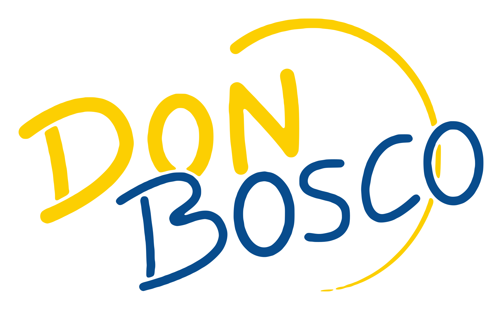

Si chiude
in festa!
Cena di fine stagione
Sabato 10 aprile ·
ore 20:00
Salone dell'oratorio Don Bosco, Asti
Soci
€ 30
· bambini
€ 15
Con le premiazioni della gara sociale
Iscrizioni entro
mercoledì 7 aprile
Iscrizioni in negozio o via mail
sciclubdonboscoasti@gmail.com